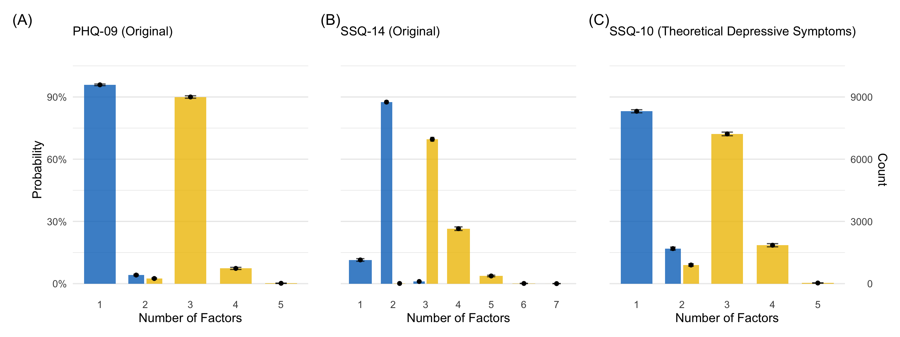
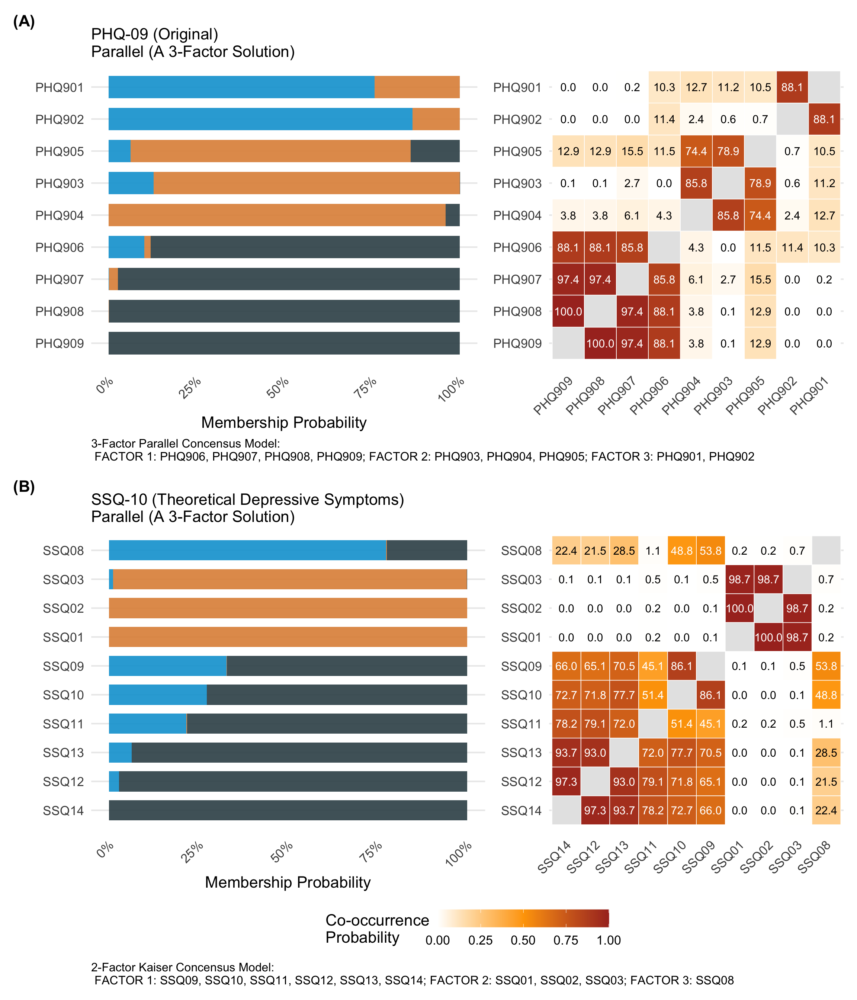
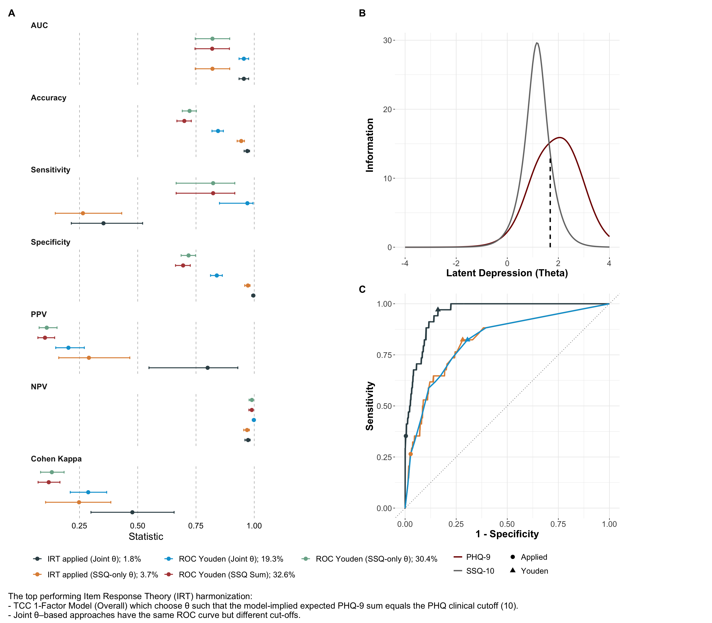
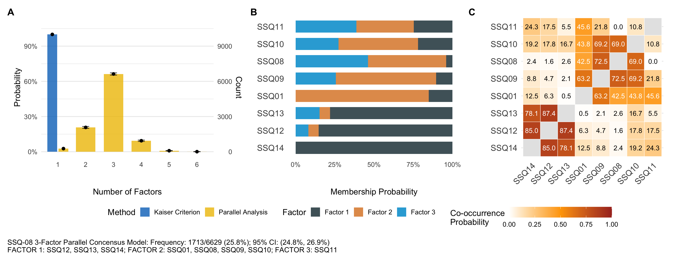
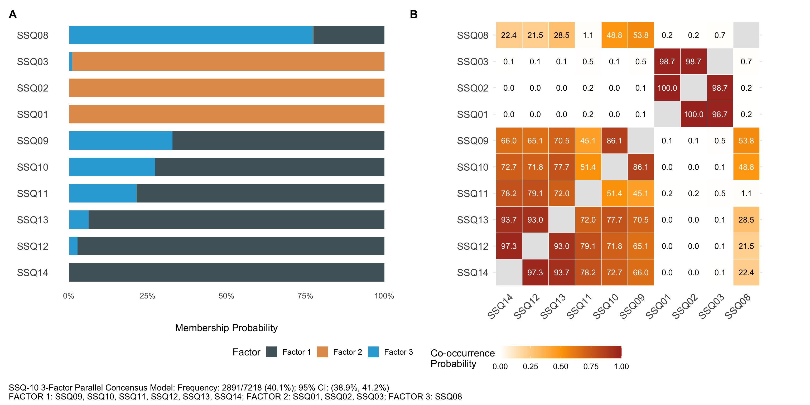

| Instrument | Role | Notes |
|---|---|---|
| PHQ-9 | Reference depression benchmark and calibration anchor. | Polytomous DSM-aligned depressive symptom scale. |
| SSQ-14 | Original culturally grounded distress measure. | Binary symptom measure with broader CMD content. |
| SSQ-10 (theoretical subset) | Depression-focused subset for harmonized screening and transportability. | Retains core depressive/cognitive-affective items and excludes less specific items. |
Psychometric Harmonization Report
Detailed Source-Aligned Summary
Source Alignment
This report reflects the detailed structure of the psychometric source index, including:
- Introduction and clinical rationale.
- Methods (setting, sampling, measures, and statistical workflow).
- Results (structure, invariance, calibration, and harmonization).
- Interpretation for transportable depression-outcome derivation.
Introduction
The primary aim is to derive a rigorous and evidence-based SSQ threshold aligned to PHQ-9 probable depression (PHQ-9 >= 10) for adolescents and young adults. The source analysis compares SSQ-14, a theoretically refined SSQ-10 subset, and reference PHQ-9 structure to support harmonized depression classification in CO-LUMINATE linked analyses.
Methods
Setting and Study Design
The work is embedded in the Isisekelo Sempilo trial context in rural uMkhanyakude (KwaZulu-Natal), using AHRI surveillance-linked data structures and clinically anchored psychometric evaluation.
Participants and Sampling
The psychometric analysis cohort in the source index is restricted to participants with concurrent baseline SSQ-14 and PHQ-9 information, focused on adolescents and young adults.
Measures and Construct Strategy
Statistical Workflow from Source Index
- Descriptive profiling and item-level diagnostics.
- Monte Carlo split-sample EFA for factor-retention stability.
- Monte Carlo CFA for fit verification of candidate solutions.
- Reliability and measurement invariance checks across sex and age groups.
- IRT-based harmonization and ROC operating-point comparison.
- Threshold translation and transportability checks for SSQ-only scoring.
Core Concepts
| Concept | Meaning |
|---|---|
| Latent structure | Underlying factor organization captured by candidate psychometric models. |
| Measurement invariance | Stability of measurement properties across demographic and clinical strata. |
| Calibration | Alignment of score scales or thresholds between SSQ and PHQ. |
| Discrimination | Ability to separate probable depression from non-cases. |
| Transportability | Ability to apply harmonized scoring rules in cohorts lacking PHQ. |
Results Summary
Participant and Baseline Signal Summary
Key source-index highlights:
- Analysis sample reported in source results:
N = 843. - PHQ-defined probable depression prevalence in source results: approximately
4.0%. - Several SSQ items show stronger alignment with PHQ severity than excluded SSQ items, supporting subset refinement logic.
Structural Validity and Stability
Source-index interpretation indicates:
- PHQ-9 shows strong practical support for unidimensional scoring despite methodological divergence in retention heuristics.
- SSQ-14 shows multidimensional tendencies with distinct clusters, motivating subset refinement.
- SSQ-10 resolves toward stable and interpretable core dimensions after artifact inspection (singleton-factor handling).


Invariance and Reliability
Source findings support robust CFI-based invariance behavior across sex and age group partitions for key models, with RMSEA behavior interpreted in context of subgroup sensitivity and model complexity. Reliability indicators remain high enough to support harmonized use in downstream analyses.
Harmonization and Calibration
Source-index harmonization findings emphasize:
- ROC-only cutoffs can inflate predicted prevalence relative to PHQ reference prevalence.
- IRT-anchored approaches better control false positives and improve transportability to SSQ-only settings.
- Operating-point choice should prioritize intended downstream use (screening sensitivity vs analytic specificity).



Interpretation
Statistical Interpretation
- Harmonization quality depends on jointly evaluating structure, invariance, reliability, and calibration, not any single metric.
- The SSQ-10 configuration provides a pragmatic balance between construct coherence and operational usability.
- IRT-anchored translation to PHQ-compatible thresholds is preferred where prevalence inflation from naive thresholds is unacceptable.
Operational Interpretation
- Harmonized depression derivation supports comparability across linked CO-LUMINATE cohorts.
- The framework is suitable for secondary longitudinal analyses where instruments differ by cohort.
- Sensitivity analyses around threshold rules remain essential in subsequent objective-level analyses.
Reporting Note
This website report is a communication-focused detailed summary aligned to the source index narrative. Full reproducible technical outputs remain in the dedicated psychometric workstream.